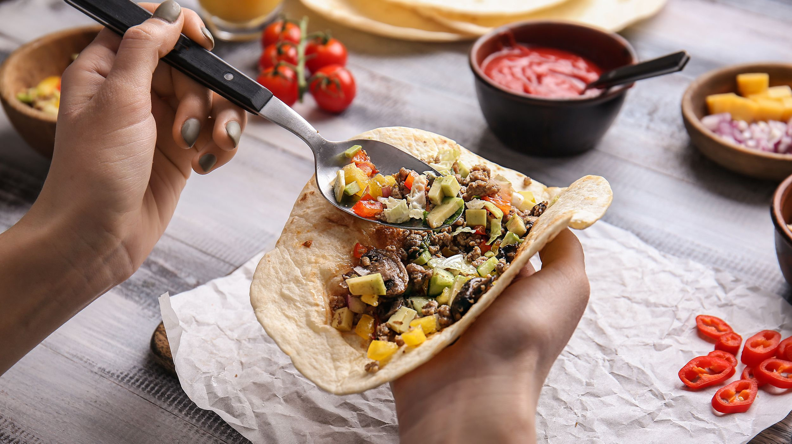

A taco (US: /ˈtɑːkoʊ/, UK: /ˈtækoʊ/, Spanish: [ˈtako]) is a traditional Mexican dish consisting of a small hand-sized corn- or wheat-based tortilla topped with a filling. The tortilla is then folded around the filling and eaten by hand. A taco can be made with a variety of fillings, including beef, pork, chicken, seafood, beans, vegetables, and cheese, and garnished with various condiments, such as salsa, guacamole, or sour cream, and vegetables, such as lettuce, coriander, onion, tomatoes, and chiles.
Tacos are a common form of antojitos, or Mexican street food, which have spread around the world.
Tacos can be contrasted with similar foods such as burritos, which are often much larger and rolled rather than folded; taquitos, which are rolled and fried; or chalupas/tostadas, in which the tortilla is fried before filling.

Tacos1/2 an iceberg lettuce shredded (refrigerated)
2-3 Tbsp sour cream2 jalapenos sliced
2 green chilies sliced
1 tsp tomato puree
1 red onion 1/3 red yellow and green bell pepper
100 gm cottage cheese (paneer)150 gm
rajma (kidney beans) cooked
1.5 Tbsp olive oil
2-3 cloves bashed garlic
1 tsp chilly powder
1 tsp cumin powder2 green tomatoes
1.5 tsp black pepper
Juice of 1 lemon
2 Tbsp coriander leaves chopped
50 gm grated cheddar
